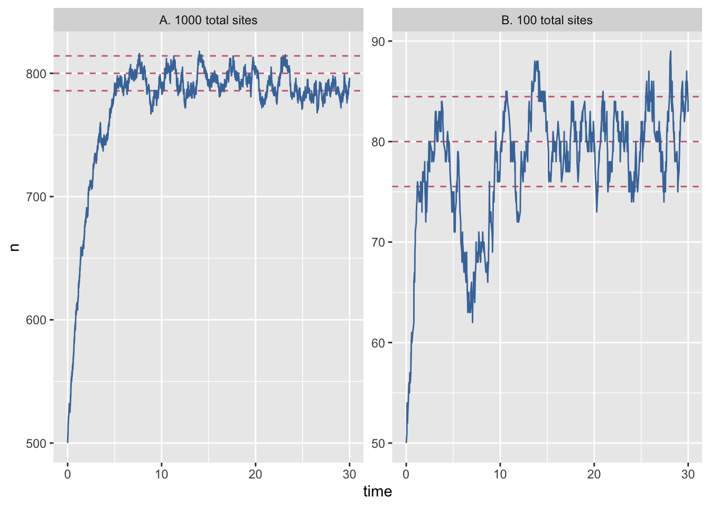
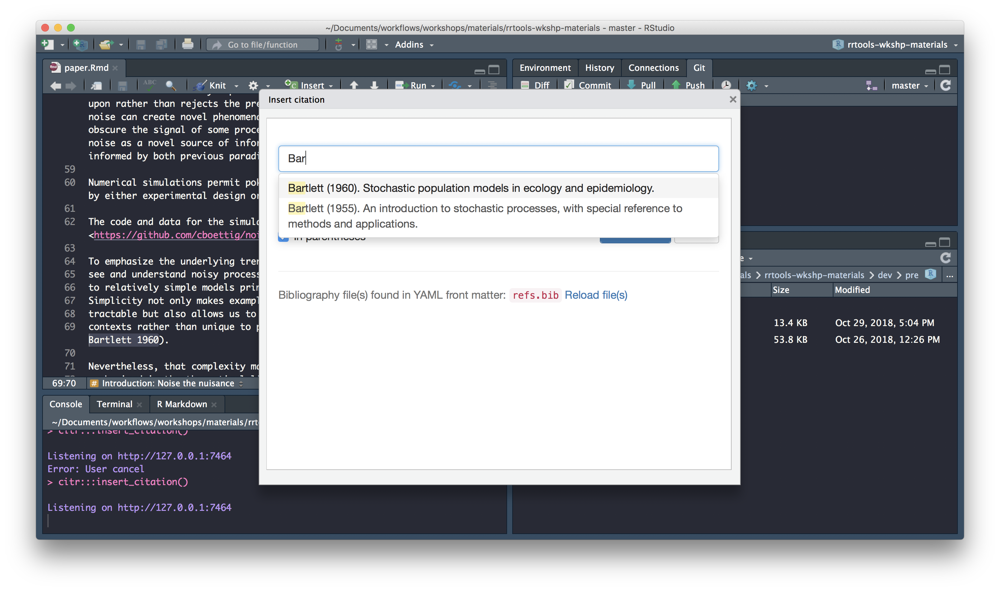

Creating a research compendium with rrtools
Background
Research is increasingly computational
Code and data are important research outputs
- yet, we still focus mainly on curating papers.
Calls for openness
- stick: reproducibility crisis
- carrot: huge rewards from working open
Yet we lag in conventions and technical infrastructure for such openness.
Enter the Research Compendium
The goal of a research compendium is to provide a standard and easily recognizable way for organizing the digital materials of a project to enable others to inspect, reproduce, and extend the research.
Three Generic Principles
Organize its files according to prevailing conventions:
- help other people recognize the structure of the project,
- supports tool building which takes advantage of the shared structure.
Separate of data, method, and output, while making the relationship between them clear.
Specify the computational environment that was used for the original analysis.
R community response
R packages can be used as a research compendium for organising and sharing files!
R package file system structure for reproducible research
Take advantage of the power of convention.
Make use of great package development tools.
See Ben Marwick, Carl Boettiger & Lincoln Mullen (2018) Packaging Data Analytical Work Reproducibly Using R (and Friends), The American Statistician, 72:1, 80-88, DOI: <10.1080/00031305.2017.1375986>

images: Kartik Ram: rstudio::conf 2019 talk
Example use of the R package structure for a research compendium (source Marwick et al, 2018)
General Project Organisation
Good project layout helps ensure the
- Integrity of data
- Portability of the project
- Easier to pick the project back up after a break
From raw to analytical data
the reproducible pipeline
Do not manually edit raw data
Keep a clean pipeline of data processing from raw to analytical.
Ideally, incorporate checks to ensure correct processing of data through to analytical.
Check out rOpenSci package drake, an R-focused pipeline toolkit for reproducibility
Separate function definition and application
When your project is new and shiny, the script file usually contains many lines of directly executated code.
As it matures, reusable chunks get pulled into their own functions.
The actual analysis scripts then become relatively short, and use the functions defined in separate R scripts.
Use Rstudio projects
Keep your work tidy, portable and self-contained
pkg here
Use function here::here("path", "to", "file") to create robust paths relative to the project root.
eg
here::here("path", "to", "file")## [1] "/Users/runner/work/rrresearchACCE20/rrresearchACCE20/path/to/file"Follow convention
It’s like agreeing that we will all drive on the left or the right. A hallmark of civilization is following conventions that constrain your behavior a little, in the name of public safety.
Jenny Bryan on Project-oriented workflows
A place for everything, everything in its place.
Benjamin Franklin
The benefits of following convention:
You will be able to find your way around any of your projects
You will be able to find your way around any project by others following same convention
You will be able to find your way around any r package on GitHub!
R Developer Tools
Leverage tools and functionality for R package development
- manage dependencies
- make functionality available
- document functionality
- validate functionality
- version contol your project
devtools, usethis,
rrtools,
Rstudio
minimal analysis project
An
scripts/directory that contains R scripts (.R), notebooks (.Rmd), and intermediate data.A
DESCRIPTIONfile that provides metadata about the compendium. Most importantly, it would list the packages needed to run the analysis. Would contain field to indicate that this is an analysis, not a package.
A reproducible analysis project would also contain:
An
R/directory which contains R files that provide high-stakes functions.A
data/directory which contains high-stakes data.A
tests/directory that contains unit tests for the code and data.A
vignettes/directory that contains high-stakes reports.
Autogenerated components:
A
man/directory which contains roxygen2-generated documentation for the reusable functions and data.Online documentation in a
docs/folder.


rrtools: Research Compendia in R
The goal of rrtools is to provide instructions, templates, and functions for making a basic compendium suitable for writing reproducible research with R.
rrtools build on tools & conventions for R package development to
- organise files
- manage dependencies
- share code
- document code
- check and test code
rrtools extends and works with a number of R packages:
devtools: functions for package developmentusethis: automates repetitive tasks that arise during project setup and developmentbookdown: facilitates writing books and long-form articles/reports with R Markdown
üíª Workshop materials
Data
On github: https://github.com/annakrystalli/rrtools-wkshp-materials/
click on Clone or download
click on Download ZIP
Unzip the file
Workshop aims and objectives
In this workshop we’ll use materials associated with a published paper (text, data and code) to create a research compendium around it.
By the end of the workshop, you should be able to:
Be able to Create a Research Compendium to manage and share resources associated with an academic publication.
Be able to produce a reproducible manuscript from a single rmarkdown document.
Appreciate the power of convention!
Let’s dive in!
üíªCreate your first reproducible research compendium
Let’s go ahead and create our first reproducible research compendium!
To do this in Rstudio Cloud (which is a bit fiddlier) we will create a general project in which we will create our reproducible research compendium project. In general, creating a project within a project is bad practice and you should avoid this when working locally, but given the more restrictive nature of working in Rstudio Cloud, we will break this general best practice rule.
Copy rrtools Project
In our shared space click on the copy button next to the rrtools Project.

Click on Save a permanent copy. You now have a personal copy of the project.
Install packages
In our rrtools project, these packages should be pre-installed and be available to the research compendium we’ll create inside.
However, if you are working locally, you would need to install the following packages starting with rrtools (if you haven’t got devtools installed, you’ll need to before you can install rrtools from GitHub).
# install rrtools
install.packages("devtools")
devtools::install_github("benmarwick/rrtools")
# install github dependencies
dependencies <- c("dplyr", "ggplot2", "ggthemes", "gitcreds", "rticles", "Cairo")
# install CRAN dependencies
install.packages(dependencies)
#install github dependencies
devtools::install_github("crsh/citr")
# install tinytex
tinytex::install_tinytex()Installing rrtools imports many of the packages we’ll need today (eg, have a look at the imports section of the DESCRIPTION file).
Imports: devtools, git2r, whisker, rstudioapi, rmarkdown, curl, RCurl, jsonlite, methods, httr, usethis, clisymbols, crayon, glue, bookdown, hereWe also install some additional packages we’ll need for the workshop.
You might also need to install tinytex (if you get errors when rendering your Rmd paper).
üö¶ Create compendium
Now that we’ve got all the materials we need, let’s start by *creating a blank research compendium for us to work in.
load library
First we need to load rrtools
library(rrtools) ## ✖ Git is installed on this computer, but not configured for use. For more information on configuring and using Git, see http://happygitwithr.com/This performs a quick check to confirm you have Git installed and configured
If you do, you should see the following output in the console.
✔ Git is installed on this computer, your username is annakrystallicreate compendium
Now we’re ready to create our compendium. We use function rrtools::create_compendium and supply it with a path at which our compendium will be created. The final part of our path becomes the compendium name. Because the function effectively creates a package, only a single string of lowercase alpha characters is accepted as a name. so let’s go for rrcompendium as the final part of our path.
To create rrcompendium in our project, I use:
rrtools::create_compendium("rrcompendium")If the call was successfull you should see the following console output:
✓ Setting active project to '/cloud/project/rrcompendium'
✓ Writing 'LICENSE'
✓ Writing 'LICENSE.md'
✓ Adding '^LICENSE\\.md$' to '.Rbuildignore'
✓ Creating 'README.Rmd' from template.
✓ Adding 'README.Rmd' to `.Rbuildignore`.
• Modify
✓ Adding code of conduct.
✓ Creating 'CONDUCT.md' from template.
✓ Adding 'CONDUCT.md' to `.Rbuildignore`.
✓ Adding instructions to contributors.
✓ Creating 'CONTRIBUTING.md' from template.
✓ Adding 'CONTRIBUTING.md' to `.Rbuildignore`.
✓ Adding runtime.txt for Binder
✓ Adding 'bookdown' to Imports
✓ Adding 'here' pkg to Imports
✓ Creating 'analysis' directory and contents
✓ Creating 'analysis'
✓ Creating 'analysis/paper'
✓ Creating 'analysis/figures'
✓ Creating 'analysis/templates'
✓ Creating 'analysis/data'
✓ Creating 'analysis/data/raw_data'
✓ Creating 'analysis/data/derived_data'
✓ Creating 'analysis/supplementary-materials'
✓ Creating 'references.bib' from template.
✓ Creating 'paper.Rmd' from template.
Next, you need to: ↓ ↓ ↓ ↓
• Write your article/report/thesis, start at the paper.Rmd file
• Add the citation style library file (csl) to replace the default provided here, see https://github.com/citation-style-language/
• Add bibliographic details of cited items to the 'references.bib' file
• For adding captions & cross-referencing in an Rmd, see https://bookdown.org/yihui/bookdown/
• For adding citations & reference lists in an Rmd, see http://rmarkdown.rstudio.com/authoring_bibliographies_and_citations.html
Note that:
⚠ Your data files are tracked by Git and will be pushed to GitHub
This project was set up by rrtools.
You can start working now or apply some more basic configuration.
Check out https://github.com/benmarwick/rrtools for an explanation of all the project configuration functions of rrtools.
Or run the rrtools configuration addin: rrtools.addin::rrtools_assistant() https://github.com/nevrome/rrtools.addin
and a new Rstudio session launched for the compendium:

Initiate git
Let’s initialise our compendium with .git. We’ll need to configure git again as this is a new Rstudio cloud project.
# configure git
use_git_config(user.name = "Jane",
user.email = "jane@example.org")
# intialise git and commit
usethis::use_git()N.B. Beware, if you are working locally, you may have ended up with two Rstudio sessions of rrcompendium. Make sure to only have one session of a single project at one time to avoid problems.
Inspect templates
.
├── DESCRIPTION <- .............................package metadata
| dependency management
├── NAMESPACE <- ...............................AUTO-GENERATED on build
├── R <- .......................................folder for functions
├── man <- .....................................AUTO-GENERATED on build
└── rrcompendium.Rproj <- ......................rstudio project filerrtools::create_compendium() creates the bare backbone of infrastructure required for a research compendium. At this point it provides facilities to store general metadata about our compendium (eg bibliographic details to create a citation) and manage dependencies in the DESCRIPTION file and store and document functions in the R/ folder. Together these allow us to manage, install and share functionality associated with our project.
Get workshop materials
Today we’ll be working with a subset of materials from the published compendium of code, data, and author’s manuscript:
Carl Boettiger. (2018, April 17). cboettig/noise-phenomena: Supplement to: “From noise to knowledge: how randomness generates novel phenomena and reveals information” (Version revision-2). Zenodo. http://doi.org/10.5281/zenodo.1219780
accompanying the publication:
Carl Boettiger  . From noise to knowledge: how randomness generates novel phenomena and reveals information. Published in Ecology Letters, 22 May 2018 https://doi.org/10.1111/ele.13085
. From noise to knowledge: how randomness generates novel phenomena and reveals information. Published in Ecology Letters, 22 May 2018 https://doi.org/10.1111/ele.13085

Let’s first create a folder to dowload the materials into. It’s sometimes useful to have a folder to hold materials that are not formally part of the project (i.e. we will not commit these files to git). I like to call such folders attic, so let’s create such a folder
dir.create("attic")Let’s also add the attic/ dir to .gitignore by adding the following text to it (remember to include a new line at the end of the file)
attic/*You can download the materials using usethis::use_course() and supplying a path to a destination folder to argument destdir. Let’s download everything into the attic/ folder.
usethis::use_course(url = "bit.ly/rrtools_wks", destdir = "attic")This will download everything we need from a GitHub repository as a .zip file, unzip it and launch it in a new Rstudio session for us to explore.
Inspect materials
The follwing files should now be contained in your attic/rrtools-wkshp-materials-master folder
├── README.md <- .......................repo README
├── analysis.R <- ......................analysis underlying paper
├── gillespie.csv <- ...................data
├── paper.pdf <- .......................LaTex pdf of the paper
├── paper.txt <- .......................text body of the paper
└── refs.bib <- ........................bibtex bibliographic fileIn this workshop we’ll attempt a partial reproduction of the original paper using the materials we’ve just downloaded.
We‚Äôll use this as an opportunity to create a new research compendium using rrtools and friends! üéä
üö¶ Update DESCRIPTION file
Let’s update some basic details in the DESCRIPTION file:
Package: rrcompendium
Title: What the Package Does (One Line, Title Case)
Version: 0.0.0.9000
Authors@R:
person(given = "First",
family = "Last",
role = c("aut", "cre"),
email = "first.last@example.com")
Description: What the package does (one paragraph).
License: MIT + file LICENSE
ByteCompile: true
Encoding: UTF-8
LazyData: true
Roxygen: list(markdown = TRUE)
RoxygenNote: 7.1.1
Imports: bookdown,
here
Suggests: devtools,
git2r
Title
Let’s start with giving our compendium a descriptive title:
Title: Partial Reproduction of Boettiger Ecology Letters 2018;21:1255–1267
with rrtoolsVersion
We don’t need to change the version now but using semantic versioning for our compendium can be a really useful way to track versions. In general, versions below 0.0.1 are in development, hence the DESCRIPTION file defaults to 0.0.0.9000.
Description
Let’s add a bit more detail about the contents of the compendium in the Description.
Description: This repository contains the research compendium of the
partial reproduction of Boettiger Ecology Letters 2018;21:1255–1267.
The compendium contains all data, code, and text associated with this sub-section of the analysisLicense
Finally, let’s create a new license for the material we create. We’ll use an MIT license. Note however that his only covers the code. We can do this with:
usethis::use_mit_license("Anna Krystalli")✔ Setting License field in DESCRIPTION to 'MIT + file LICENSE'
✔ Writing 'LICENSE.md'
✔ Adding '^LICENSE\\.md$' to '.Rbuildignore'This overwrites the current files LICENSE and LICENSE.md and updates the DESCRIPTION file, embedding our name in the details of the license.
License: MIT + file LICENSERecap
We‚Äôve finished updating our DESCRIPTION file! üéâ
It should look a bit like this:
Package: rrcompendium
Title: Partial Reproduction of Boettiger Ecology Letters 2018;21:1255–1267
with rrtools
Version: 0.0.0.9000
Authors@R:
person(given = "Anna",
family = "Krystalli",
role = c("aut", "cre"),
email = "annakrystalli@googlemail.com")
Description: This repository contains the research compendium of the partial
reproduction of Boettiger Ecology Letters 2018;21:1255–1267. The compendium
contains all data, code, and text associated with this sub-section of the
analysis.
License: MIT + file LICENSE
ByteCompile: true
Encoding: UTF-8
LazyData: true
Roxygen: list(markdown = TRUE)
RoxygenNote: 7.1.1
Imports: bookdown,
here
Suggests: devtools,
git2rand your project folder should contain:
├── CONDUCT.md
├── CONTRIBUTING.md
├── DESCRIPTION
├── LICENSE
├── LICENSE.md
├── NAMESPACE
├── README.Rmd
├── analysis
│ ├── data
│ │ ├── DO-NOT-EDIT-ANY-FILES-IN-HERE-BY-HAND
│ │ ├── derived_data
│ │ └── raw_data
│ ├── figures
│ ├── paper
│ │ ├── paper.Rmd
│ │ └── references.bib
│ ├── supplementary-materials
│ └── templates
│ ├── author-info-blocks.lua
│ ├── journal-of-archaeological-science.csl
│ ├── pagebreak.lua
│ ├── scholarly-metadata.lua
│ ├── template.Rmd
│ └── template.docx
├── attic
│ └── rrtools-wkshp-materials-master
│ ├── README.md
│ ├── analysis.R
│ ├── gillespie.csv
│ ├── paper.pdf
│ ├── paper.txt
│ └── refs.bib
├── rrcompendium.Rproj
└── runtime.txtLet’s commit our work and move on to preparing our compendium for sharing on GitHub.
Update README
Every GitHub repository needs a README landing page.
When we intialised our research compendium, an rrtools README template was created.
You can always re-create one with:
rrtools::use_readme_rmd()
✔ Creating 'README.Rmd' from template.
✔ Adding 'README.Rmd' to `.Rbuildignore`.
● Modify 'README.Rmd'
✔ Rendering README.Rmd to README.md for GitHub.
✔ Adding code of conduct.
✔ Creating 'CONDUCT.md' from template.
✔ Adding 'CONDUCT.md' to `.Rbuildignore`.
✔ Adding instructions to contributors.
✔ Creating 'CONTRIBUTING.md' from template.
✔ Adding 'CONTRIBUTING.md' to `.Rbuildignore`.
This generates README.Rmd and renders it to README.md, ready to display on GitHub. It contains:
- details of authorship and DOI of the associated paper.
- details of authorship and DOI of the code and data.
- a template citation to show others how to cite your project.
- instructions on how to download and install the compendium
- instructions on how to reproduce the analysis
- license information for the text, figures, code and data in your compendium
The call also adds two other markdown files:
CONDUCT.md: a code of conduct for usersCONTRIBUTING.md:: basic instructions for people who want to contribute to our compendium
update README
There’s 4 main edits we need to make to the template:
add title
In the first code chunk, assign the title to the title object:
Title <- "Partial Reproduction of Boettiger Ecology Letters 2018;21:1255–1267 with rrtools"update zip url
This is a link to download a zipped file of the repository. To update the template, just paste the url of your compendium repository like so:
[master.zip](https://github.com/annakrystalli/rrcompendium/archive/master.zip)adjust data LICENSE
Let’s adjust the data LICENSE to match the source compendium license, which is CC-BY 4.0. Let’s also add Carl Boettiger as copyright holder of the data.
**Text and figures :** [CC-BY-4.0](http://creativecommons.org/licenses/by/4.0/), Copyright (c) 2018 Carl Boettiger.
**Code :** See the [DESCRIPTION](DESCRIPTION) file
**Data :** [CC-BY-4.0](http://creativecommons.org/licenses/by/4.0/), Copyright (c) 2018 Carl Boettiger.Remember to knit your README.Rmd to it’s .md version.
üö¶ Create GitHub repository
Next, we’ll create a GitHub repository to share our compendium. We’ll make use of our GITHUB_PAT and go for https authentication. We can do this with function:
You will need to set up gitcreds again in this new project!
# configure GitHub PAT credentials
gitcreds::gitcreds_set()
# create GitHub repository and push
usethis::use_github(protocol = "https")✔ Setting active project to '/Users/Anna/Documents/workflows/rrcompendium'
● Check title and description
Name: rrcompendium
Description: Partial Reproduction of Boettiger Ecology Letters 2018;21:1255–1267 with rrtools
The function will prompt you to confirm the name and description for your GitHub repo which it parses from our DESCRIPTION file. If everything looks good select the affirmative option.
Are title and description ok?
1: Not now
2: Definitely
3: Nope
If creation of the repo was successfull you should see the following console output:
✔ Creating GitHub repository
✔ Adding GitHub remote
✔ Adding GitHub links to DESCRIPTION
✔ Setting URL field in DESCRIPTION to 'https://github.com/annakrystalli/rrcompendium'
✔ Setting BugReports field in DESCRIPTION to 'https://github.com/annakrystalli/rrcompendium/issues'
✔ Pushing to GitHub and setting remote tracking branch
✔ Opening URL https://github.com/annakrystalli/rrcompendiumCommit and push to GitHub
We‚Äôve now completed our rrtools README.Rmd! üéâ
Render it to update the
README.mdfile which is displayed on GitHubCommit and push to GitHub.
You’re Github repository README should look like this on the site:

üö¶ Setting up the analysis folder
Complete analysis
We’ll now move to working in our analysis folder which will contain our analysis and paper. It already exists but you can re-create it by using function rrtools::use_analysis()
The function has three location = options:
top_levelto create a top-levelanalysis/directoryinstto create aninst/directory (so that all the sub-directories are available after the package is installed)vignettesto create avignettes/directory (and automatically update theDESCRIPTION).
The default is a top-level analysis/.
rrtools::use_analysis()✔ Adding bookdown to Imports
✔ Creating 'analysis' directory and contents
✔ Creating 'analysis'
✔ Creating 'analysis/paper'
✔ Creating 'analysis/figures'
✔ Creating 'analysis/templates'
✔ Creating 'analysis/data'
✔ Creating 'analysis/data/raw_data'
✔ Creating 'analysis/data/derived_data'
✔ Creating 'references.bib' from template.
✔ Creating 'paper.Rmd' from template.
Next, you need to: ↓ ↓ ↓ ↓
● Write your article/report/thesis, start at the paper.Rmd file
● Add the citation style library file (csl) to replace the default provided here, see https://github.com/citation-style-language/
● Add bibliographic details of cited items to the 'references.bib' file
● For adding captions & cross-referencing in an Rmd, see https://bookdown.org/yihui/bookdown/
● For adding citations & reference lists in an Rmd, see http://rmarkdown.rstudio.com/authoring_bibliographies_and_citations.html
Note that:
⚠ Your data files are tracked by Git and will be pushed to GitHubRegardless for location option, the contents of the created sub-directories are the same:
analysis
├── data
│ ├── DO-NOT-EDIT-ANY-FILES-IN-HERE-BY-HAND
│ ├── derived_data
│ └── raw_data
├── figures
├── paper
│ ├── paper.Rmd
│ └── references.bib
├── supplementary-materials
└── templates
├── author-info-blocks.lua
├── journal-of-archaeological-science.csl
├── pagebreak.lua
├── scholarly-metadata.lua
├── template.Rmd
└── template.docxLet’s inspect
paper.Rmd
paper.Rmd is ready to write in and render with bookdown. It includes:
a YAML header that identifies the
references.bibfile and the suppliedcslfile (Citation Style Language) to style the reference list)a colophon that adds some git commit details to the end of the document. This means that the output file (HTML/PDF/Word) is always traceable to a specific state of the code.
references.bib
The references.bib file has just one item to demonstrate the format. It is ready to insert more reference details.
We can replace the supplied csl file with a different citation style from https://github.com/citation-style-language/
üö¶ Reproduce a paper in Rmd
In this section we’re going to create a literate programming document to reproduce the paper in a format suitable for journal submission or as a pre-print. We’ll do this using the course materials we downloaded.
In particular, we’re going to combine the code in analysis.R, the text in paper.txt and the references in the refs.bib file in an .Rmd document to reproduce paper.pdf.
More information on working on academic journals with Bookdown
Setup data
Copy data to data/
To begin, let’s copy gillespie.csv from the course materials you downloaded in rrtools-wkshp-materials-master/ to the subfolder analysis/data/raw_data/ in rrcompendium
We can do this programmatically with:
fs::file_copy("attic/rrtools-wkshp-materials-master/gillespie.csv",
"analysis/data/raw_data/")Your data folder should now look like this:
analysis/data
├── DO-NOT-EDIT-ANY-FILES-IN-HERE-BY-HAND
├── derived_data
└── raw_data
└── gillespie.csvInspect analysis.R file
Let’s also open analysis.R in the course materials and run the code. The script has some initial setup, then loads the data, recodes one of the columns for plotting and then plots the results of the simulation, which generates figure 1 in paper.pdf.
analysis.R
library(dplyr)
library(readr)
library(ggplot2)
library(ggthemes)
theme_set(theme_grey())# load-data
data <- read_csv(here::here("gillespie.csv"), col_types = "cdiddd")# create colour palette
colours <- ptol_pal()(2)# recode-data
data <- data %>%
mutate(system_size = recode(system_size,
large = "A. 1000 total sites",
small = "B. 100 total sites"))
# plot-gillespie
data %>%
ggplot(aes(x = time)) +
geom_hline(aes(yintercept = mean), lty=2, col=colours[2]) +
geom_hline(aes(yintercept = minus_sd), lty=2, col=colours[2]) +
geom_hline(aes(yintercept = plus_sd), lty=2, col=colours[2]) +
geom_line(aes(y = n), col=colours[1]) +
facet_wrap(~system_size, scales = "free_y") 
üö¶ Create journal article template using rticles
The rticles package is designed to simplify the creation of documents that conform to submission standards. A suite of custom R Markdown templates for popular journals is provided by the package.
delete paper/ subdirectory
First, let’s delete the current analysis/paper folder as we’re going to create a new folder and paper.Rmd template.
We can do this programmatically with:
fs::dir_delete("analysis/paper")create new paper template
This particular paper was published in Ecology Letters, an Elsevier Journal. We can create a new paper.Rmd template from the templates provided by rticles package.
We can use the New R Markdown dialog
Select:
- Template: Elesevier Journal Article
- Name: paper
- Location:
rrcompendium/analysis
knitr::include_graphics("assets/rticle.png")
Or we can use rmarkdown::draft() to create articles:
rmarkdown::draft(here::here("analysis","paper.Rmd"), template = "elsevier", package = "rticles")Both these functions create the following files in a new directory analysis/paper.
analysis/paper
├── elsarticle.cls
├── elsevier-harvard-without-titles.csl
├── elsevier-harvard.csl
├── elsevier-vancouver.csl
├── elsevier-with-titles-alphabetical.csl
├── elsevier-with-titles.csl
├── elsevier-without-titles.csl
├── mybibfile.bib
├── numcompress.sty
└── paper.RmdThe
*.clsfiles contain citation language styles for the references.The
mybibfile.bibcontains an example reference list.The new
paper.Rmdis the file we will be working in.
Let’s open it up and start editing it.
üö¶ Update YAML
The YAML header in Paper.Rmd contains document wide metadata and is pre-populated with some fields relevant to an academic publication.
---
title: Short Paper
author:
- name: Alice Anonymous
email: alice@example.com
affiliation: Some Institute of Technology
footnote: 1
- name: Bob Security
email: bob@example.com
affiliation: Another University
- name: Cat Memes
email: cat@example.com
affiliation: Another University
footnote: 2
- name: Derek Zoolander
email: derek@example.com
affiliation: Some Institute of Technology
footnote: 2
address:
- code: Some Institute of Technology
address: Department, Street, City, State, Zip
- code: Another University
address: Department, Street, City, State, Zip
footnote:
- code: 1
text: "Corresponding Author"
- code: 2
text: "Equal contribution"
abstract: |
This is the abstract.
It consists of two paragraphs.
journal: "An awesome journal"
date: "2021-05-06"
bibliography: mybibfile.bib
#linenumbers: true
#numbersections: true
csl: elsevier-harvard.csl
output: rticles::elsevier_article
---Here we’re going to reproduce paper.pdf as is, so we’ll actually be editing the file with details from the original publication.
First, let’s clear all text BELOW the YAML header (which is delimited by ---. DO NOT delete the YAML header).
Next, let’s open paper.txt from the course material which contains all text from the in paper.pdf. We can use it to complete some of the fields in the YAML header.
title
Add the paper title to this field
title: "From noise to knowledge: how randomness generates novel phenomena and reveals information"
address
Here we specify the addresses associated with the affiliations specified in authors
address:
- code: a
address: "Dept of Environmental Science, Policy, and Management, University of California Berkeley, Berkeley CA 94720-3114, USA"Note that the field code in address cross-references with the affiliations specified in author.
bibliography
Before specifying the bibliography, we need to copy the refs.bib file associated with paper.pdf from the course materials and save it in our analysis/paper subdirectory.
We can do this programmatically with:
fs::file_copy("attic/rrtools-wkshp-materials-master/refs.bib", "analysis/paper/")Next we can set the refs.bib as the source for our paper’s bibliography:
bibliography: refs.bibüö¶ layout
We can add an additional field called layout which specifies the layout of the output and takes the following values.
- review: doublespace margins
- 3p: singlespace margins
- 5p: two-column
Let’s use single space margins
layout: 3ppreamble
We can add also an additional field called preamble. This allows us to include LaTeX packages and functions. We’ll use the following to add linenumbers and doublespacing.
preamble: |
\usepackage[nomarkers]{endfloat}
\linenumbers
\usepackage{setspace}
\doublespacingüö¶ abstract
This field should contain the abstract
abstract: |
# Abstract
Noise, as the term itself suggests, is most often seen a nuisance to ecological insight, a inconvenient reality that must be acknowledged, a haystack that must be stripped away to reveal the processes of interest underneath. Yet despite this well-earned reputation, noise is often interesting in its own right: noise can induce novel phenomena that could not be understood from some underlying determinstic model alone. Nor is all noise the same, and close examination of differences in frequency, color or magnitude can reveal insights that would otherwise be inaccessible. Yet with each aspect of stochasticity leading to some new or unexpected behavior, the time is right to move beyond the familiar refrain of "everything is important" (Bjørnstad & Grenfell 2001). Stochastic phenomena can suggest new ways of inferring process from pattern, and thus spark more dialog between theory and empirical perspectives that best advances the field as a whole. I highlight a few compelling examples, while observing that the study of stochastic phenomena are only beginning to make this translation into empirical inference. There are rich opportunities at this interface in the years ahead.
output
The output format. In this case, the template is correctly pre-populated with rticles::elsevier_article so no need to edit.
output: rticles::elsevier_articleAt this point, your YAML header should look like this:
---
title: "From noise to knowledge: how randomness generates novel phenomena and reveals information"
author:
- name: "Carl Boettiger"
affiliation: a
email: "cboettig@berkeley.edu"
address:
- code: a
address: "Dept of Environmental Science, Policy, and Management, University of California Berkeley, Berkeley CA 94720-3114, USA"
bibliography: refs.bib
layout: 3p # review = doublespace, 3p = singlespace, 5p = two-column
preamble: |
\usepackage[nomarkers]{endfloat}
\linenumbers
\usepackage{setspace}
\doublespacing
abstract: |
Noise, as the term itself suggests, is most often seen a nuisance to ecological insight, a inconvenient reality that must be acknowledged, a haystack that must be stripped away to reveal the processes of interest underneath. Yet despite this well-earned reputation, noise is often interesting in its own right: noise can induce novel phenomena that could not be understood from some underlying determinstic model alone. Nor is all noise the same, and close examination of differences in frequency, color or magnitude can reveal insights that would otherwise be inaccessible. Yet with each aspect of stochasticity leading to some new or unexpected behavior, the time is right to move beyond the familiar refrain of "everything is important" [@Bjornstad2001]. Stochastic phenomena can suggest new ways of inferring process from pattern, and thus spark more dialog between theory and empirical perspectives that best advances the field as a whole. I highlight a few compelling examples, while observing that the study of stochastic phenomena are only beginning to make this translation into empirical inference. There are rich opportunities at this interface in the years ahead.
output: rticles::elsevier_article
---üö¶ Add text
Now let’s add the main body of the paper from paper.txt.
add new page after abstract
First, let’s a add a new page after the abstract using:
\newpage
copy and paste text from paper.txt
We do not need the details we’ve just completed the YAML with, so ignore the title, abstract etc and just copy everything in paper.txt from the Introduction header down to and including the reference section header.
# Introduction: Noise the nuisance
To many, stochasticity, or more simply, noise,
is just that -- something which obscures patterns we are
...
...
...
...
...
# Acknowledgements
The author acknowledges feedback and advice from the editor,
Tim Coulson and two anonymous reviewers. This work was supported in
part by USDA National Institute of Food and Agriculture, Hatch
project CA-B-INS-0162-H.
# References
Check pdf output
Let’s knit our document and have our first look at the resulting pdf by clicking on the Knit tab.
üö¶ Update references
Next we’ll replace the flat citations in the text with real linked citation which can be used to auto-generate formatted inline citations and the references section.
Insert formatted citations
We’ll use the citr package, which provides functions and an RStudio addin to search a BibTeX-file to create and insert formatted Markdown citations into the current document.
Once citr is installed and you have restarted your R session, the addin appears in the addin menu. The addin will automatically look up the Bib(La)TeX-file(s) specified in the YAML front matter.
To insert a citation
Select text to replace with a citation
Launch
citraddin:
Search for citation to insert 
Select citation to insert

Insert citation

Carry on updating the rest of the citations. Don’t forget to check the abstract for citations!
üö¶ Update math
For the sake of time today, and not to open this topic too deeply here, I’ve included the following LaTex equation syntax in the text:
\begin{align}
\frac{\mathrm{d} n}{\mathrm{d} t} = \underbrace{c n \left(1 - \frac{n}{N}\right)}_{\textrm{birth}} - \underbrace{e n}_{\textrm{death}}, \label{levins}
\end{align}that generates equation 1 in the paper.pdf.
\[\begin{align} \frac{\mathrm{d} n}{\mathrm{d} t} = \underbrace{c n \left(1 - \frac{n}{N}\right)}_{\textrm{birth}} - \underbrace{e n}_{\textrm{death}}, \label{levins} \end{align}\]
So you don’t need to edit anything here.
Check Math expressions and
Markdown extensions by bookdown for more information.
update inline math
Inline LaTeX equations and parameters can be written between a pair of dollar signs using the LaTeX syntax, e.g., $f(x) = 1/x$ generates \(f(x) = 1/x\).
Using paper.pdf to identify mathematical expressions in the text (generally they appear in italic), edit your paper.Rmd, enclosing them between dollar signs.
Check pdf output
Let’s knit our document to check our references and maths annotations have been updated correctly by clicking on the Knit tab.
üö¶ Add code
Now that we’ve set up the text for our paper, let’s insert the code to generate figure 1.
Add libraries chunk
First let’s insert a libraries code chunk right at the top of the document to set up our analysis. Because it’s a setup chunk we set include = F which suppresses all output resulting from chunk evaluation.
```{r libraries, include=FALSE}
```set document chunk options
Now, let’s set some knitr options for the whole document by adding the following code to our libraries chunk:
knitr::opts_chunk$set(echo = FALSE, message=FALSE, warning=FALSE,
dev="cairo_pdf", fig.width=7, fig.height=3.5)We’re setting default chunk options to:
echo = FALSEmessage = FALSEwarning = FALSE
to suppress code, warnings and messages in the output, and
dev="cairo_pdf"fig.width=7fig.height=3.5
to specify how figures will appear.
add libraries
Copy and paste the code for loading all the libraries from analysis.R. Add library rrcompendium so we can access function recode_system_size. The libraries chunk should now look like so:
knitr::opts_chunk$set(echo = FALSE, message=FALSE, warning=FALSE,
dev="cairo_pdf", fig.width=7, fig.height=3.5)
library(dplyr)
library(readr)
library(ggplot2)
library(ggthemes)
library(rrcompendium)Add set-theme chunk
Right below the libraries chunk, insert a new chunk and call it set-theme
Copy the code to set the plot theme and pasted into the set-theme code:
theme_set(theme_grey())Add figure1 chunk
Now scroll down towards the bottom of the document and create a new chunk just above the Conclusions section. Call it figure1
Add code
Copy and paste the remaining code into a new chunk which will create figure 1.
# create colour palette
colours <- ptol_pal()(2)
# load-data
data <- read_csv(here::here("gillespie.csv"), col_types = "cdiddd")
# recode-data
data <- data %>%
mutate(system_size = recode(system_size, large = "A. 1000 total sites", small= "B. 100 total sites"))
# plot-gillespie
data %>%
ggplot(aes(x = time)) +
geom_hline(aes(yintercept = mean), lty=2, col=colours[2]) +
geom_hline(aes(yintercept = minus_sd), lty=2, col=colours[2]) +
geom_hline(aes(yintercept = plus_sd), lty=2, col=colours[2]) +
geom_line(aes(y = n), col=colours[1]) +
facet_wrap(~system_size, scales = "free_y") üö¶ Add caption
Finally, let’s update chunk figure1 to include a figure caption. The text for the caption is at the bottom of paper.txt. We can include it in the chunk header through chunk option fig.cap like so:
```{r figure1, figure1, fig.cap="Population dynamics from a Gillespie simulation of the Levins model with large (N=1000, panel A) and small (N=100, panel B) number of sites (blue) show relatively weaker effects of demographic noise in the bigger system. Models are otherwise identical, with e = 0.2 and c = 1 (code in appendix A). Theoretical predictions for mean and plus/minus one standard deviation shown in horizontal re dashed lines."} ```Render final document to pdf
Let’s check our final work by re-knitting to pdf. You should be looking at something that looks a lot like paper.pdf
üö¶ Add paper dependencies
Finally, before we’re finished, let’s ensure the dependencies introduced in the paper are included. We can use rrtools::add_dependencies_to_description()
rrtools::add_dependencies_to_description()This function scans script files (.R, .Rmd, .Rnw, .Rpres, etc.) for external package dependencies indicated by library(), require() or :: and adds those packages to the Imports field in the package DESCRIPTION:
Imports:
bookdown,
dplyr,
ggplot2 (>= 3.0.0),
ggthemes (>= 3.5.0),
here (>= 0.1),
knitr (>= 1.20),
rticles (>= 0.6)
üî® Install and Restart
Commit and push to GitHub!
Final compendium
You can see the resulting rrcompendium here
The complete compendium should contain the following files:
.
├── CONDUCT.md
├── CONTRIBUTING.md
├── DESCRIPTION
├── LICENSE
├── LICENSE.md
├── NAMESPACE
├── R
│ └── process-data.R
├── README.Rmd
├── README.md
├── analysis
│ ├── data
│ │ ├── DO-NOT-EDIT-ANY-FILES-IN-HERE-BY-HAND
│ │ ├── derived_data
│ │ └── raw_data
│ │ └── gillespie.csv
│ ├── figures
│ ├── paper
│ │ ├── elsarticle.cls
│ │ ├── mybibfile.bib
│ │ ├── numcompress.sty
│ │ ├── paper.Rmd
│ │ ├── paper.fff
│ │ ├── paper.pdf
│ │ ├── paper.spl
│ │ ├── paper.tex
│ │ ├── paper_files
│ │ │ └── figure-latex
│ │ │ └── figure1-1.pdf
│ │ └── refs.bib
│ └── templates
│ ├── journal-of-archaeological-science.csl
│ ├── template.Rmd
│ └── template.docx
├── inst
│ └── testdata
│ └── gillespie.csv
├── man
│ └── recode_system_size.Rd
├── rrcompendium.Rproj
└── tests
├── testthat
│ └── test-process-data.R
└── testthat.R